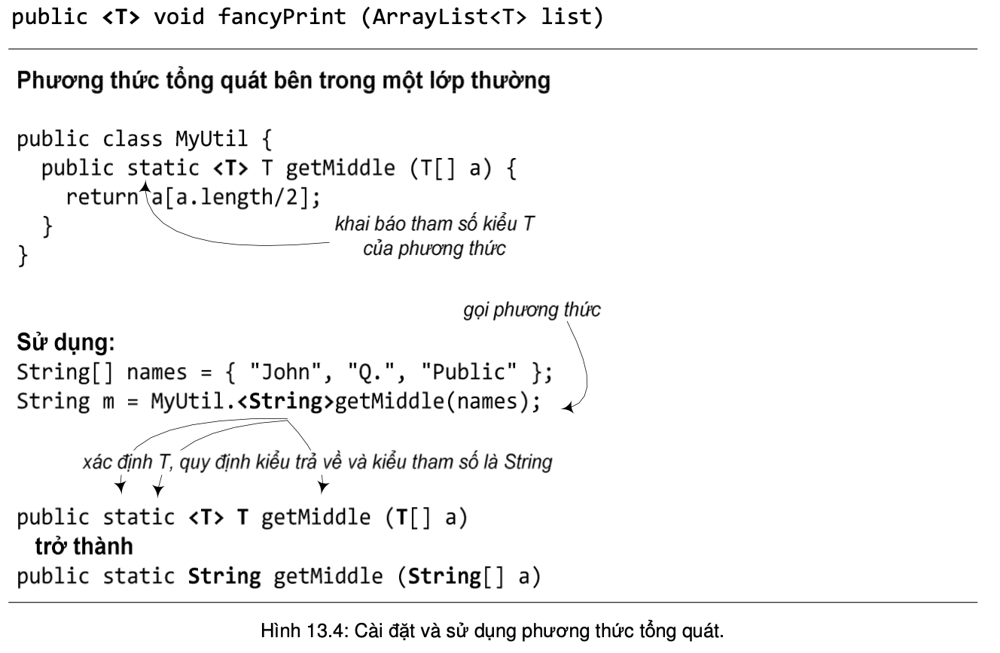

13.2. PHƯƠNG THỨC TỔNG QUÁT
Phương thức tổng quát là phương thức mà tại khai báo có sử dụng ít nhất một tham số kiểu. Ta có thể dùng tham số kiểu của phương thức theo những cách khác nhau:
- Dùng tham số kiểu được quy định sẵn tại khai báo lớp. Chẳng hạn, tham số E của phương thức add(E o) trong lớp ArrayList<E> là tham số kiểu của lớp. Trong trường hợp này, kiểu được khai báo tại tham số phương thức được thay thế bởi kiểu mà ta dùng khi tạo thực thể của lớp. Nếu ta tạo đối tượng ArrayList<String> thì add sẽ trở thành add(String o).
- Dùng kiểu tham số không được quy định tại khai báo lớp. Nếu bản thân lớp không dùng tham số kiểu, ta vẫn có thể cho phương thức dùng tham số kiểu bằng cách khai báo nó tại khoảng trống trước kiểu trả về. Ví dụ, phương thức fancyPrint in tất cả các phần tử trong một ArrayList dành cho kiểu T. T được khai báo trước từ khóa void tại khai báo phương thức:

Phương thức tổng quát với chức năng lấy phần tử đứng giữa của một mảng chung chung có thể được cài đặt và sử dụng như trong Hình 13.4. Trong đó MyUtil không phải một lớp tổng quát, nó không khai báo tham số kiểu. Nhưng hàm getMiddle lại khai báo tham số kiểu T, là kiểu dữ liệu của mảng mà getMiddle xử lý. Khi gọi phương thức getMiddle, ta phải cung cấp giá trị cho tham số kiểu, chẳng hạn <String>, tại lời gọi phương thức. Tên kiểu cụ thể đó sẽ được thay vào tất cả các lần xuất hiện T tại khai báo phương thức getMiddle.